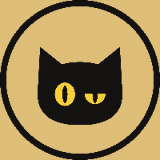

Inicio
Recursos
El Gato Escéptico
Recursos
Herramientas y guías gratis, hechas para consultar cuando tengas dudas.

Iremos añadiendo más recursos. Lo que haya aquí es gratis y lo puedes usar sin dar ningún dato.